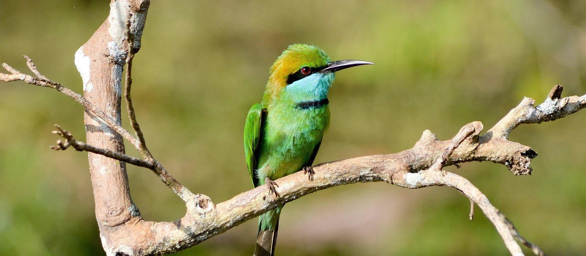
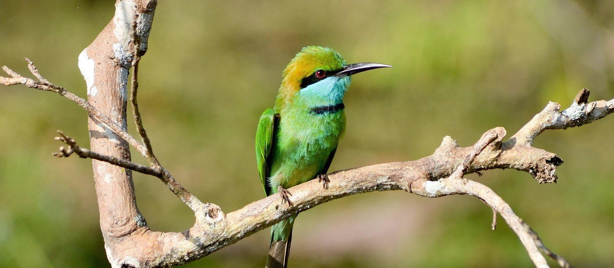
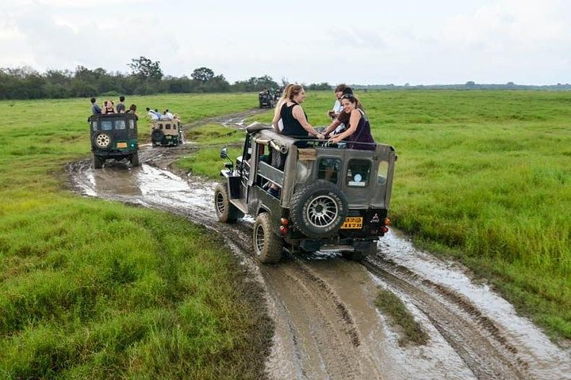
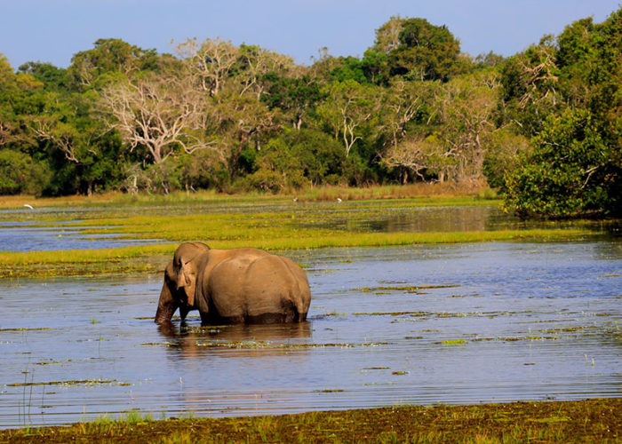
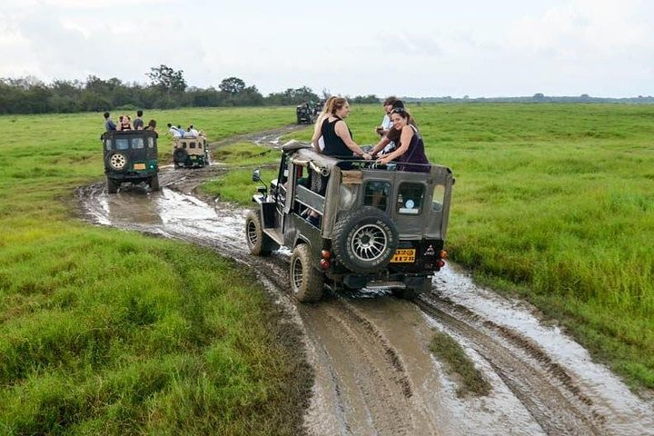
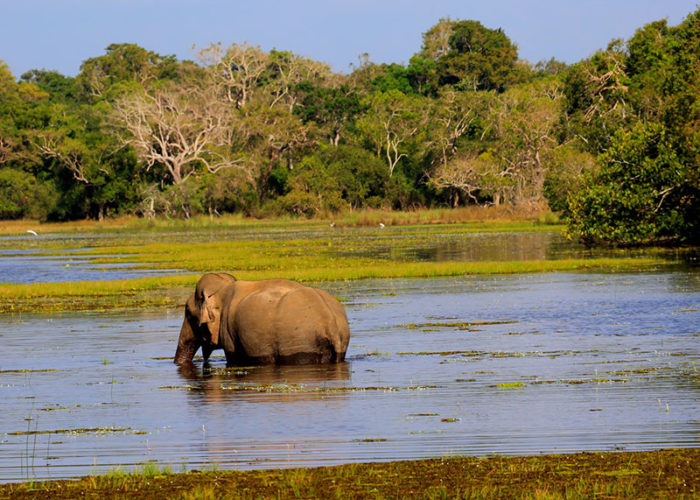

Wildlife In Wilpattu National Park
 


Wilpattu National Park, situated in the northwestern part of Sri Lanka, is a haven for wildlife enthusiasts, offering a diverse and thriving ecosystem. The park, with its expansive landscape, encompasses a mosaic of habitats, from dense forests to open grasslands, and features numerous natural lakes or 'villus.' This unique environment provides a sanctuary for a rich variety of flora and fauna. Among the most iconic residents of Wilpattu are the Sri Lankan leopards. The park boasts a healthy population of these elusive big cats, making it one of the best places on the island to catch a glimpse of these majestic creatures. Jeep safaris through the park's winding trails offer the chance to witness leopards in their natural habitat, exhibiting their stealth and grace. Wilpattu is also home to a diverse array of wildlife, including elephants, sloth bears, spotted deer, sambar deer, and water buffaloes. The park's water bodies attract a profusion of birdlife, making it a birdwatcher's paradise. Visitors can spot various species of eagles, owls, kingfishers, and vibrant migratory birds, creating a symphony of colors and sounds. In addition to its larger inhabitants, Wilpattu National Park is teeming with reptiles, amphibians, and smaller mammals, contributing to the park's overall biodiversity. Crocodiles basking along the shores of the lakes and water monitors slithering through the underbrush add an element of excitement to the safari experience. The park's landscape, characterized by dense vegetation and scenic vistas, provides a stunning backdrop for wildlife encounters. The combination of lush greenery, ancient ruins scattered throughout the park, and the interconnected water bodies creates a unique ambiance, inviting visitors to immerse themselves in the untamed beauty of Wilpattu. A visit to Wilpattu National Park is not just a safari; it's a journey into the heart of Sri Lanka's wilderness, offering a chance to witness the intricate web of life that thrives in this natural paradise.
Attractive Landscape Of Wilpattu National Park
 



Wilpattu National Park, located in the northwestern part of Sri Lanka, unfolds like a captivating canvas of diverse landscapes and undulating terrains. The park's expanse encompasses a harmonious blend of dense woodlands, open grassy plains, and serene lakes, creating a picturesque setting for wildlife enthusiasts and nature lovers. Towering trees, including the ancient and sacred Palu trees, punctuate the skyline, casting dappled shadows on the earth below. The terrain is interspersed with natural lakes, known as 'villus,' providing vital water sources and picturesque scenery that reflects the surrounding greenery. The park's distinct topography is characterized by sand-rimmed water basins, rocky outcrops, and hidden glades, offering a varied and dynamic backdrop for the diverse array of flora and fauna that call Wilpattu home. Jeep safaris through the park's network of trails lead visitors to expansive grasslands where herds of spotted deer graze peacefully, and where the elusive Sri Lankan leopard may be spotted amid the foliage. What adds to the unique charm of Wilpattu is the presence of ancient ruins scattered throughout the park, remnants of a bygone era that add a historical and mystical touch to the landscape. These archaeological sites, combined with the natural beauty of the park, create an atmosphere that is both wild and evocative. As the sun sets over Wilpattu National Park, casting warm hues across the horizon, the landscape takes on a magical quality, accentuating the untamed beauty of this natural sanctuary. The interplay of light and shadow, coupled with the rich biodiversity, makes Wilpattu a captivating destination, inviting exploration and offering a glimpse into the wonders of Sri Lanka's wilderness.
Safari Experience In Wilpattu Nationa Park

Embarking on a safari adventure in Wilpattu National Park is an immersive journey into the heart of Sri Lanka's untamed wilderness, where the landscape comes alive with a rich tapestry of biodiversity. The safari experience in Wilpattu is a captivating exploration of diverse habitats, from dense woodlands and open grassy plains to tranquil lakes, each unveiling a unique facet of the park's natural splendor. The safari unfolds in specially equipped jeeps, navigating a network of winding trails that lead deep into the park's interior. As the journey begins, the air is filled with anticipation, and the rustling leaves and distant calls of wildlife create an atmospheric prelude to the adventure. The park is renowned for its population of elusive Sri Lankan leopards, and the thrill of spotting these majestic big cats amid the thick foliage adds an element of excitement to the safari. The landscape of Wilpattu provides a scenic backdrop for wildlife encounters. The open grasslands host herds of spotted and sambar deer, grazing peacefully as peacocks display their vibrant plumage. Crocodiles sunning themselves on the banks of the lakes, water buffaloes cooling off in the water, and elephants majestically roaming the wilderness contribute to the park's diverse array of inhabitants. The interconnected lakes or 'villus' within Wilpattu offer serene panoramas, reflecting the surrounding greenery and attracting a plethora of birdlife. Herons, eagles, and kingfishers are among the many species that adorn the skies and waters, creating a symphony of sights and sounds. One of the unique aspects of the Wilpattu safari is the opportunity to explore the park's historical treasures. Ancient ruins, such as the Kudiramalai point and the Doric Bungalow, add a cultural dimension to the experience, blending the allure of wildlife with the echoes of a bygone era. As the sun sets over Wilpattu, casting a warm glow on the landscape, the safari concludes, leaving visitors with indelible memories of a journey through one of Sri Lanka's most captivating natural sanctuaries. The Wilpattu safari is not just a wildlife excursion; it's a sensory odyssey through the untamed beauty and ecological richness of this remarkable national park.